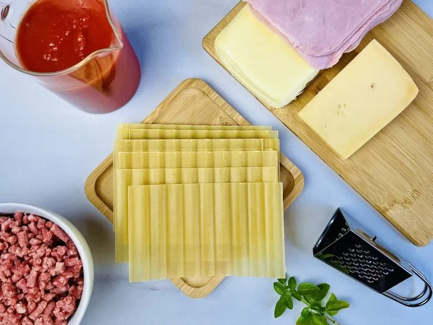
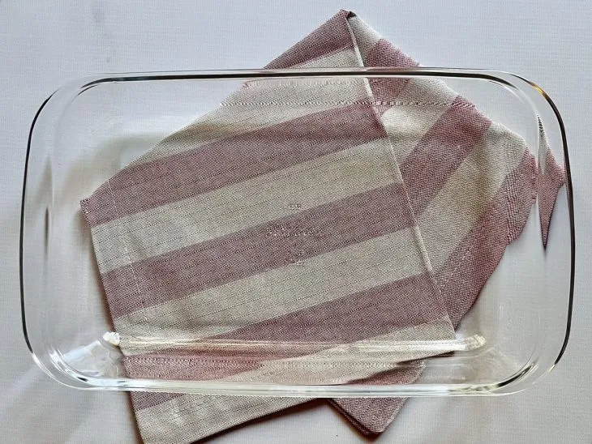
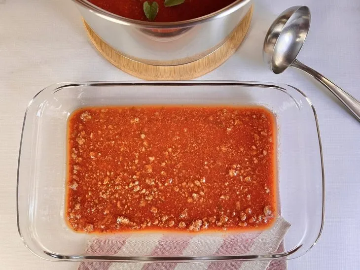
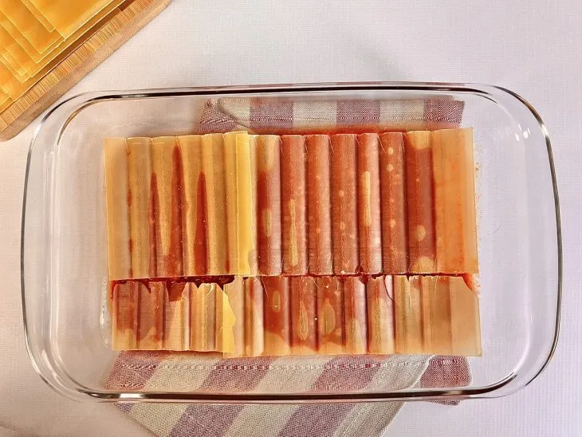
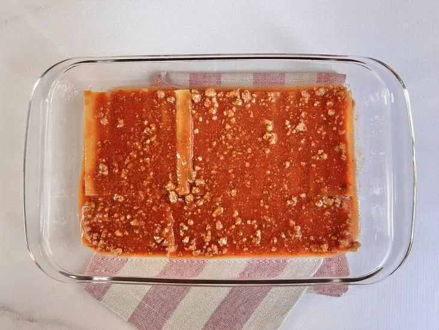
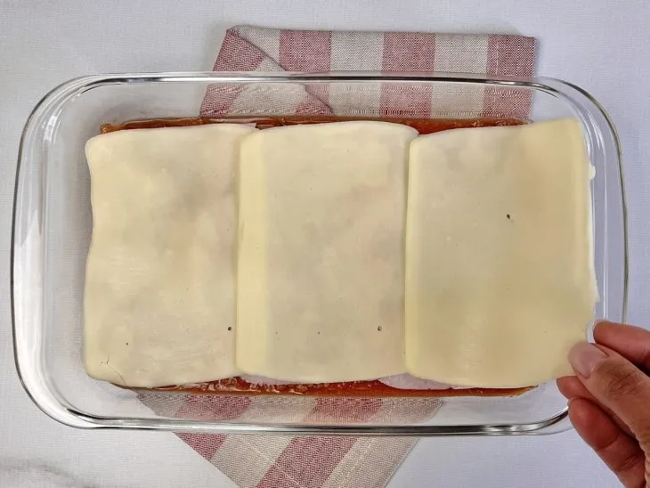
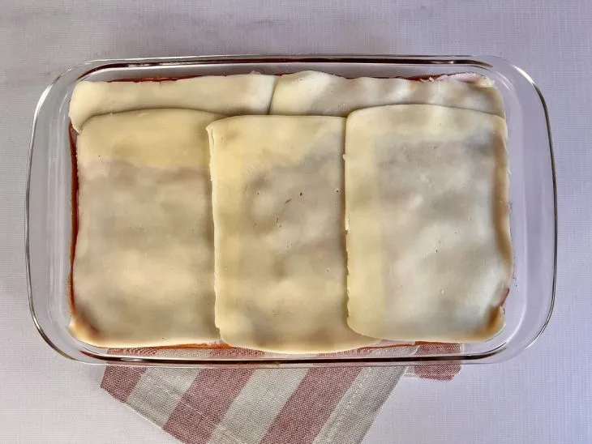
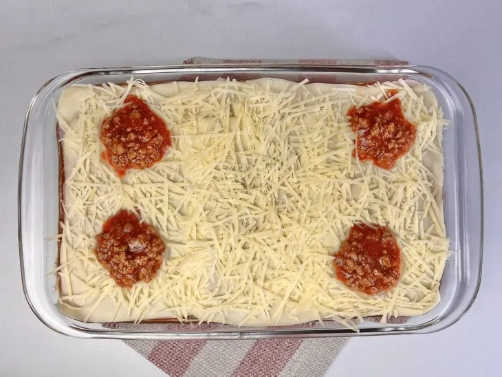
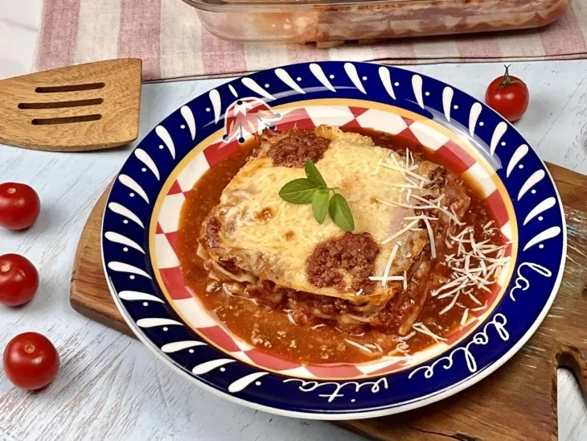

Como montar lasanha: aprenda a fazer esse prato queridinho por todos
Aprenda a montar uma lasanha à bolonhesa, que fica com recheio bem distribuído, resultando em camadas suculentas que, ao partir, não se desestruturam. É possível adaptar o recheio, seguindo a mesma lógica de montagem. Separe os ingredientes e vamos para a cozinha!
ingredientes
- Massa para lasanha pré-cozida
- Molho á bolonhesa
- Presunto e queijo

Prepare o molho à bolonhesa ao seu gosto. Optamos por utilizar a massa pré-cozida, porém também é possível usar massa fresca. Organize os ingredientes para começar a montagem;

Você vai precisar de uma travessa larga e funda. Utilizamos um refratário de 1,6 litros (5,2 x 18,4 x 30,1 cm), que rendeu uma lasanha grande com 4 camadas de massa;

Na primeira camada, despeje uma concha de molho à bolonhesa para forrar todo o fundo da travessa. O molho não deixará a massa em contato com a travessa, evitando, assim, que ela grude ou queime;

Por cima do molho, coloque uma camada de massa de lasanha. Se necessário, quebre ou corte a massa para que ela se ajuste à forma. Não deixe espaços vazios – isso ajudará a estruturar a lasanha;

Despeje outra concha de molho à bolonhesa por cima da massa. Dica: para recheios mais secos, por exemplo frango, sempre coloque uma camada de molho por cima da massa, evitando que ela resseque;

Faça uma camada com presunto e queijo. Utilizamos os dois ingredientes. Se preferir, utilize apenas queijo (que pode ser mussarela ou outro de sua preferência);

Repita as camadas até acabar a massa: massa, molho à bolonhesa (ou molho de sua preferência e recheio), presunto e queijo. Finalize a última camada com queijo, assim, a lasanha vai gratinar no forno

Na última camada, deixe 1 cm entre a massa e a borda da travessa para a lasanha não transbordar. Leve para assar no forno preaquecido a 200 ºC. Siga o tempo de cozimento indicado na embalagem da massa;

Se estiver usando massa fresca. Após 10 minutos no forno, espete a lasanha com um garfo e verifique se ela já está cozida. Retire do forno e sirva a lasanha quentinha!